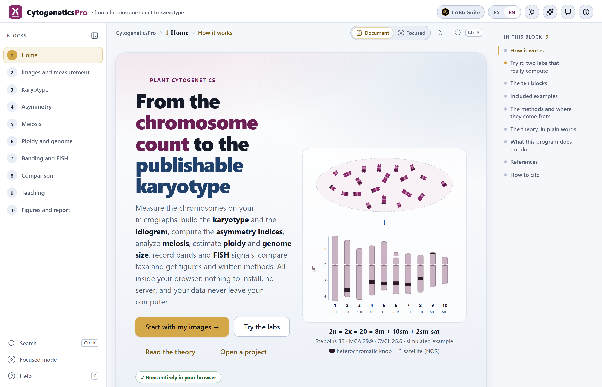
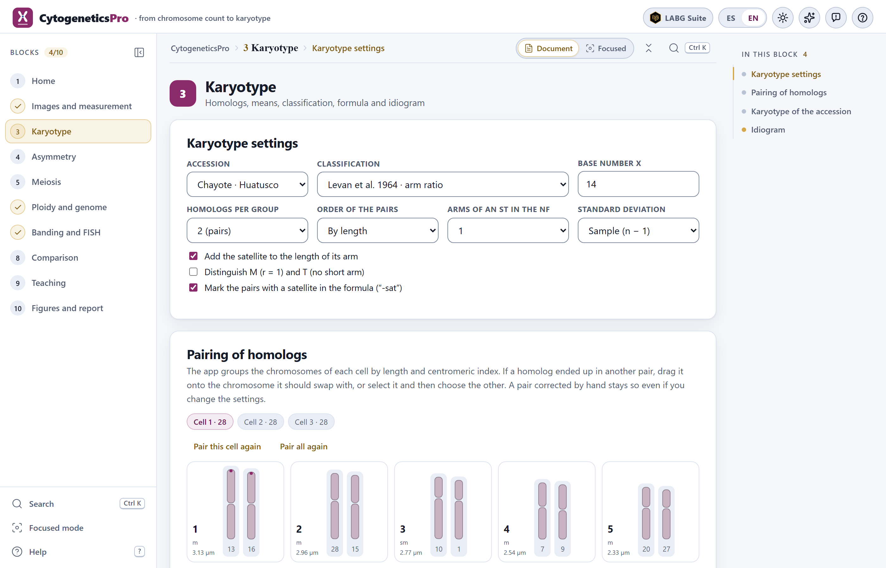
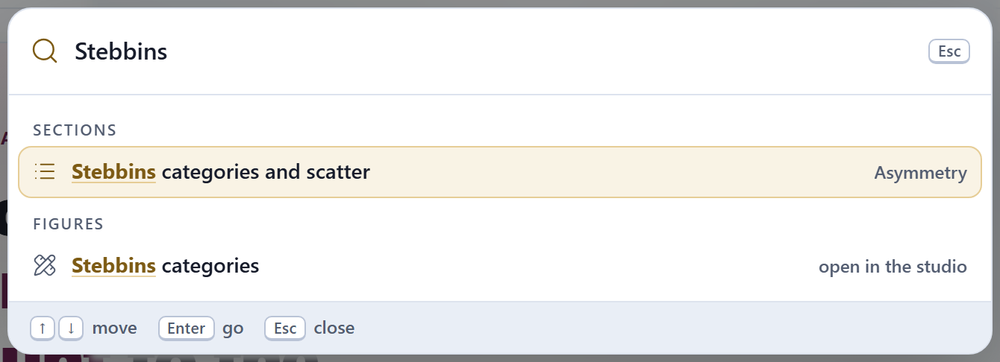
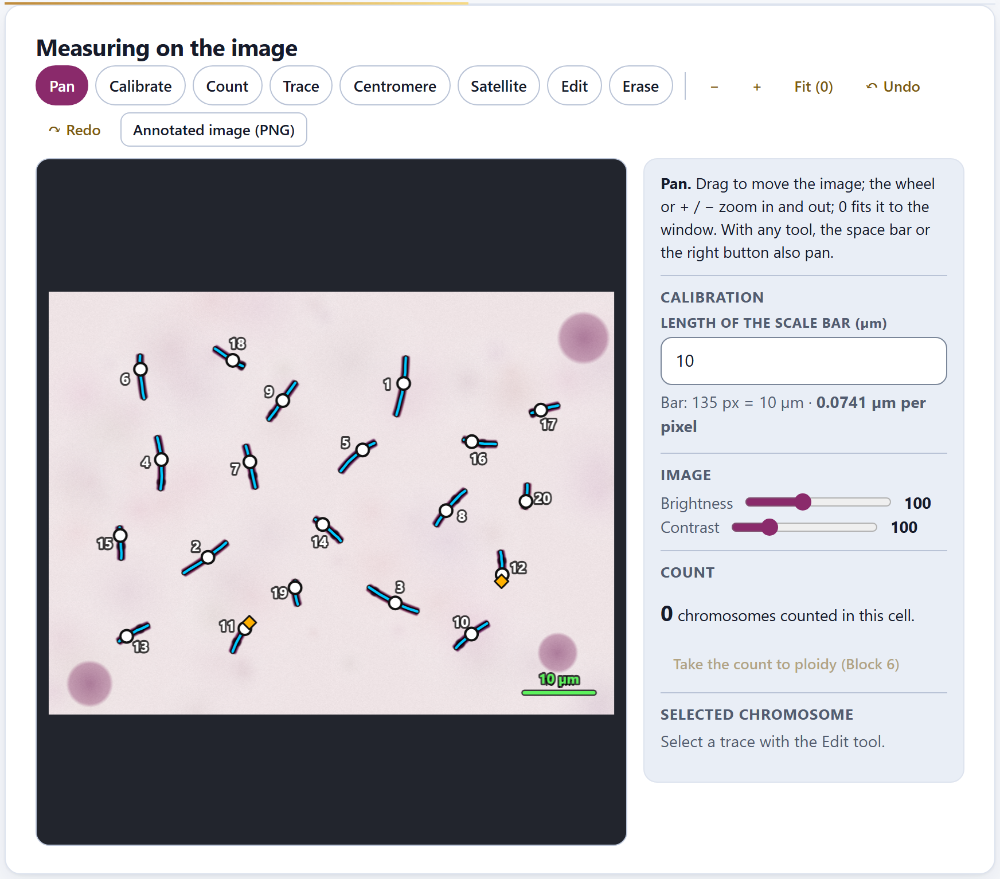
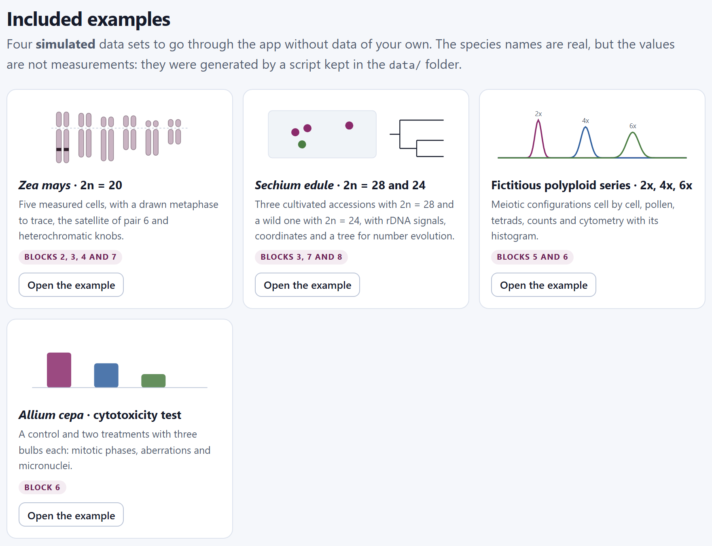
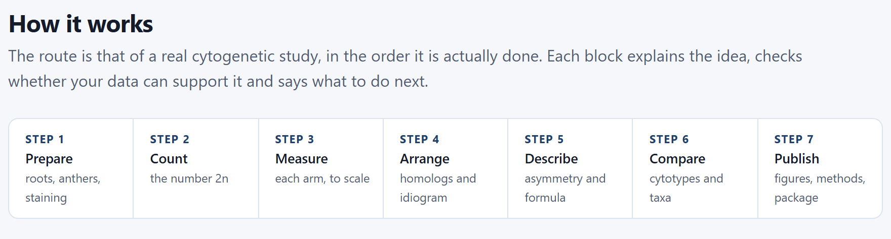

The program’s citation also appears, ready to copy as text or in BibTeX, in the How to cite section of the app’s home page. The program does not yet have a digital object identifier (DOI): it will be added to both citations when the program is published.
CytogeneticsPro runs entirely inside your browser. The micrographs, measurements and projects you open are read on your computer and are never sent to any server: you can work with the images of a thesis in progress or with unpublished data without any of it leaving your machine. The program uses no accounts, loads nothing from the internet and needs no connection to compute.
The illustrations, diagrams and screenshots in this manual are original: they were generated with the program itself or with code written for the manual. The four examples used in the screenshots are simulated: the names of the species and places are real, but the values are not measurements from any preparation or any publication.
The manual follows the same order as the app: ten numbered blocks, walked from top to bottom in the left-hand bar. Each chapter explains one block and carries its number—Chapter 5 is Block 5, and its sections and figures are numbered 5.1, 5.2…. The introduction has no number: its sections are I.1, I.2….
Each chapter opens with what the block solves in a cytogenetic study, goes on with what is on screen in the order it appears, and closes with the rules for reading the result and the most common mistakes. There is no need to read it from cover to cover: if all you need is a karyotype with its idiogram, Chapters 2 and 3 are enough; if you have already measured and want the indices, Chapter 4. Appendix B gathers the rules of every block.
The block’s color appears in the opening of its chapter, in the number of each section, in the tab on the edge of the page and in the contents, and it is the same as in the band on the cover.
| Block | Name in the app | What it does |
|---|---|---|
| 1 | Home | The logic of cytogenetics in plain words, two labs that really compute, the methods with their sources, the examples, the references and how to cite |
| 2 | Images and measurement | Calibrate, count, trace every chromosome and measure its arms on the micrograph, or type in and paste the measurements |
| 3 | Karyotype | Homologs, means, classification, formula and idiogram |
| 4 | Asymmetry | The indices, what each one measures and which are recommended, with the Stebbins categories |
| 5 | Meiosis | Configurations, chiasmata, abnormalities, meiotic index and pollen |
| 6 | Ploidy and genome | Counts, ploidy level, flow cytometry and the Allium test |
| 7 | Banding and FISH | Bands, fluorochromes and probes on the idiogram |
| 8 | Comparison | Distances, clustering, principal components, number evolution and cytotypes |
| 9 | Teaching | Simulators, exercises, self-assessment, glossary and practicals |
| 10 | Figures and report | Figures, tables, written methods, report and reproducible package |
Clarifications and practical tips that save time.
What can change your conclusions if it is overlooked.
The idea behind a computation, without unnecessary formulas.
A case with the examples included in the program, with the numbers the app gives.
| If the result falls in this case… | then this is the recommended reading. |
These are guides for interpretation, not laws: what you know about the plant, the preparation and how it was measured always comes first.
What tends to fail when using the block—an uncalibrated cell, a homolog in the wrong pair, a badly chosen peak—and how to fix it.
| Written like this | Means |
|---|---|
| Pair all again | A button, field or menu of the app, with its text as it appears on screen in English. |
| Block 6›Histogram of the cytometer | A path: open the first and look inside it for the second. |
Ctrl + S, .json | A key, a file name or a value to be typed as is. |
| 2n, x, p, q, r, CI | The somatic chromosome number and the basic number; the short and the long arm; the arm ratio r = q/p and the centromeric index CI = 100·p/(p + q). |
| m, sm, st, t | Metacentric, submetacentric, subtelocentric and telocentric, after Levan et al. (1964). |
| 2.54 µm · 3.18 pg | Numbers are written with a decimal point, as the app writes them, and with the unit separated by a space. |
A cytogenetic study begins at the microscope and ends in a figure and a set of numbers that somebody else must be able to check: the count of 2n, the karyotype with its idiogram, the asymmetry indices, meiosis, the ploidy level, the genome size. CytogeneticsPro brings that work together on a single page, in the order in which it is done, and says at each step where each number comes from.
It is a plant cytogenetics program that runs in the browser, with nothing to install. It takes a study from the chromosome count to the publishable karyotype: measuring the chromosomes on the micrographs, arranging them, describing them, comparing them and writing the figures and the methods.
It is designed for crops and their wild relatives—maize, chayote, fruit trees, forest trees—and for teaching genetics. It measures each chromosome with a line that follows its curvature on a calibrated image; it pairs the homologs and averages over cells; it classifies each pair by the position of the centromere and writes the karyotype formula; it computes twelve asymmetry indices with the Stebbins categories; it analyzes meiotic configurations and compares them with what is expected for an autopolyploid or an allopolyploid; it estimates the ploidy level and the genome size by flow cytometry; it records bands and in situ hybridization signals on the idiogram; and it compares karyotypes among taxa, with chromosome number evolution on a tree.
Everything is computed by an engine written from scratch for this program, without other people’s libraries, and each method cites the work that defines it: on the app’s home page, in the notes of each block and in the methods written by Block 10.

A good way to know whether the program is useful to you is to see which questions it answers, and in which block.
| Question | Block |
|---|---|
| How long is each arm of each chromosome in my micrographs? | 2 |
| How many chromosomes does this cell have, and what is the mode of 2n in the accession? | 2 6 |
| Which are the homologs, what type is each pair and what is the karyotype formula? | 3 |
| How asymmetric is the karyotype, and in which Stebbins category does it fall? | 4 |
| How many chiasmata are there per cell? Is meiosis regular? How viable is the pollen? | 5 |
| Are the meiotic configurations those of an autopolyploid or those of an allopolyploid? | 5 |
| What ploidy level does the plant have, and how much DNA is in its nucleus? | 6 |
| Is an extract cytotoxic? Does the mitotic index fall, do aberrations rise? | 6 |
| Where do the bands and the FISH signals fall, and do they repeat from one cell to the next? | 7 |
| How alike are the karyotypes of several taxa? How did the chromosome number change on the tree? | 8 |
| How do I teach mitosis, meiosis and the karyotype with exercises that grade themselves? | 9 |
| How do I publish the idiogram, the karyogram, the tables and the methods? | 10 |
Everything that follows rests on six ideas. If you keep them, a good part of the mistakes made when describing a karyotype are no longer possible.
The starting point is the micrographs of metaphases, or the arm measurements if you already have them. The other blocks take their own tables—meiotic configurations, counts, cytometry, signals—, which are typed in, pasted from a spreadsheet or opened as CSV.
| In | Format and where |
|---|---|
| Micrographs | .png and .jpg images; each one opens a cell (Block 2) |
| Arm measurements | Typed in or pasted from a spreadsheet or a paper: columns recognized by name or by order, with tab, semicolon or comma (Block 2) |
| The blocks’ tables | Configurations, phases, tetrads and pollen (Block 5); counts, cytometry and the Allium test (Block 6); signals (Block 7): typed in, pasted or as .csv |
| Cytometer histogram | A .csv or .txt of channels or of events (Block 6) |
| Tree and outline | A tree in Newick or NEXUS and, if wanted, a .geojson outline for the map of cytotypes (Block 8) |
| Projects | A .json saved earlier by the app itself, with its images (Ctrl + S to save, Ctrl + O to open) |
| Out | Format |
|---|---|
| Figures | Idiograms, karyogram cut out of the image, Stebbins categories, MCA × CVCL, histograms, dendrogram, biplot, tree with the numbers and map, as SVG or PNG; also through the suite’s figure studio |
| Tables | All of the project’s, as CSV or TSV, ready for a spreadsheet |
| Text | The methods written in Spanish or English with their references, and a printable or HTML report |
| The annotated image | The micrograph with the traces, the centromere and the numbers, as PNG at its original resolution |
| Package | A reproducible .zip with the project, the report, the methods, the tables and the figures |
Only a modern browser, in a version from the last few years. There is nothing to install and no internet connection is needed; the whole program fits in one folder.
index.html. It is the simplest way and works exactly like everything else: the computations and the examples are inside the program.Open CytogeneticsPro.bat. It starts a minimal local server on port 9900 and opens the app at http://localhost:9900. It is only needed to open it from another computer or a tablet on the same network; the file server.ps1 explains how.The preferences—the language and the light or dark theme—are saved in the browser itself and remembered the next time. The data are not: every time you open the app it starts empty, and to resume a study there is the .json project, which also keeps the images. If you try to close the tab with unsaved data, the app warns you.
The project keeps the micrographs inside the .json, so its size grows with them. It is worth cropping each image to the metaphase and saving it as PNG or as good-quality JPG before opening it: the measurement gains nothing from the empty edges of the photograph.
All the applications of the suite share the same bar, the same navigation and the same figure tools, so what you learn here also serves you in the others.
On the left is the bar of the ten blocks; on the right, the In this block list, with the sections of the open block. At the foot of each block two buttons lead to the previous and the next one. When you change a control and the results are recomputed further down, a floating button, Last change, takes you back to the control you touched, and another one to go Back to top. Almost everything can also be done from the keyboard:
| Key | What it does |
|---|---|
Alt + ← · Alt + → | The previous or the next block; in focused mode, the previous or the next section |
Ctrl + K | Search for a block, a section, a control or a figure |
Ctrl + S · Ctrl + O | Save the project to a .json · open a saved one |
[ · ? | Collapse the block bar · see the list of shortcuts |
V C N T M S E B | In the Block 2 editor: Pan, Calibrate, Count, Trace, Centromere, Satellite, Edit and Erase |
Ctrl + Z · Ctrl + Y | In the Block 2 editor: undo and redo |

1 2 3 4 5 6 7 8 9 10 11 12?).[ collapses it.Ctrl + K). A block, a section, a control or a figure, by its name.
Ctrl + K) with “Stebbins” typed: it finds the Stebbins categories and scatter section of Block 4 and the figure Stebbins categories, which opens in the figure studio. Enter goes to the chosen result.Block 2 is the only one that works on a photograph. Its editor has one tool per task—Pan, Calibrate, Count, Trace, Centromere, Satellite, Edit and Erase—, each with its one-letter key, and beside it a panel that explains the active tool, the calibration, brightness and contrast, and the count. Chapter 2 goes through it step by step.

Every figure in the app can be opened in the figure studio, a window shared by the suite where the texts, the font size, the legend and the colors are changed without touching the data, and exported to the widths and resolutions of journals. Next to each figure, the ✎ button opens the figure editor, to change its texts, its colors and its legend. The blocks’ SVG and PNG buttons always write the colors of the light theme, even if you are working in the dark one. Chapter 10 explains it in depth.
To learn without data of your own, the app comes with four simulated data sets. The names of the species and places are real, but the values were generated by a script of its own from base karyotypes written by hand with round values: they serve to go through the app and for the tests, not to describe those species. They are opened with Open the example in Block 1›Included examples, or from the blocks that use them, and each one takes you to the block where it starts.

| Example | Opens in | What it has and what it is for |
|---|---|---|
| Zea mays, 2n = 20 | 2 | A landrace maize from Texcoco with five cells: the first is a metaphase drawn by the app, with its traces, the satellite of pair 6 and the heterochromatic knobs; the other four, direct measurements. Measurement, karyotype, asymmetry and bands. |
| Sechium edule, 2n = 28 and 24 | 3 | Three cultivated chayote accessions (Huatusco, Chilchotla and Uruapan) and a wild one with 2n = 24, three cells each, 45S and 5S rDNA and CMA⁺ signals, coordinates and an illustrative tree of cucurbits. Karyotype, FISH, comparison and number evolution. |
| Fictitious polyploid series, 2x, 4x and 6x | 5 | An invented species with x = 7 and three populations: meiotic configurations cell by cell, phases, tetrads, pollen, counts and cytometry with the histogram of the tetraploid. |
| Allium cepa, cytotoxicity test | 6 | A control and two concentrations of a fictitious extract, three bulbs per treatment and 1,000 cells per bulb: mitotic index, phases, aberrations and micronuclei. |
How each example was simulated—the base karyotypes, the measurement error model, the seed—is written in data/LEEME.md, next to the script that generates them. The karyotype exercise in Block 9 does not use these examples: it invents a new metaphase every time.
The blocks are in the order of a real cytogenetic study. There is no need to go through all of them: those that do not apply are skipped, and each block says whether it is worth going back to an earlier one. The How it works section of the home page sums it up in seven steps.

What you measure in Block 2 is used by Block 3 and, through the karyotype, by Blocks 4, 7, 8 and 10; the count of a cell is taken to Block 6 with a button. If you change a measurement or open another project, each block recomputes its own results the next time you visit it, and its check mark in the bar goes off if it no longer has a result.
A computing program is worth what its numbers are worth. The asymmetry indices were compared with the examples published by Peruzzi and Eroğlu (2013) and with the ideal karyotypes of Zuo and Yuan (2011); the app’s engines were recomputed, separately, with formulas written anew in an independent statistical computing language, on 81 karyotypes—including hard cases, with telocentrics and equal arms—.
The tests also served to find mistakes and badly made decisions, and they were documented: for example, that in the Stebbins (1971) table the column is defined by the proportion of chromosomes with an arm ratio below 2, or that the DI index uses medians and not means (Lavania and Srivastava, 1992). The chapters say, where it matters, which convention the app follows and why.
Knowing where a tool ends is as useful as knowing what it does. The app’s home page says so in What this program does not do:
| It does not do | Why, and what to do |
|---|---|
| Recognizing chromosomes by itself | You trace each chromosome; the app measures exactly what you trace, without automatic segmentation. That way you always know what was measured. |
| Driving the microscope or the cytometer | It reads the images and text files they export, never the instruments. |
| Likelihood models | Chromosome number evolution is reconstructed by parsimony with costs per event, not by maximum likelihood. |
| Maps with third-party layers | The map of cytotypes is drawn on a grid of coordinates; you can load your own outline. |
| Knowing what is not in the project | The written methods are a draft: the app does not know the field material, the microscope or the number of plants, and Block 10 says so. |